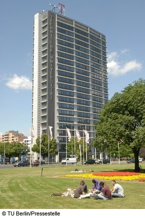

Venue
The workshop will take place on October 10th, 2014 at the TU Berlin.
The exact adress is:

TEL Auditorium 20th floor,
TU Berlin,
Ernst-Reuter-Platz 7,
10587 Berlin, Germany
The building is located directly at the Ernst-Reuter-Platz roundabout.
Travel
By Airplane
If you fly to Berlin, it is convenient to arrive at Tegel Airport. From the airport you can take the bus X9 directly to 'Ernst-Reuter-Platz' (the bus starts there, so there is only one direction -- 'S+U Zoologischer Garten'). The bus leaves every 10 minutes and takes about 16 minutes to 'Ernst-Reuter-Platz'. The ticket can be obtained from the ticket machines where the bus leaves, you need an 'Einzelfahrausweis Berlin AB' which costs EUR 2.60 (more information on public transportation in Berlin BVG Berlin). (see Google Maps for location on map).
You can also take a Taxi from the airport, this costs approximatly EUR 30 to 'Ernst-Reuter-Platz'.
By Train
If you arrive by train the easiest is to arrive at 'Berlin Hauptbahnhof' and then take the S-Bahn to the station 'Tiergarten' (see Google Maps for location on map). You can use the S75 (direction 'Westkreuz'), S7 (direction 'Wannsee Bhf') or S5 (direction ' Spandau Bhf'). You need an 'Einzelfahrausweis Berlin AB' which costs EUR 2.60.
Registration
The early registration fee for the EOOLT'2014 Workshop has been set to EUR 130.-, early registration is open until September 19th (late registration will cost EUR 150,-). The registration fee covers the cost of the printed proceedings, lunch, and the coffee breaks. The dinners on Thursday and Friday are not included.
You can register here.
Workshop Accomodation
The following is a list of some hotels that are suitable for the participants of the EOOLT workshop. The hotels are all a short walk or a short trip by public transport away from the conference venue.
Global Map of the Hotels : Google Maps
- Hotel Novotel Berlin am Tiergarten, Straße des 17. Juni 106-108, 10623 Berlin
- Hotel Gates Berlin City West, Knesebeckstraße 8-9, 10623 Berlin
- Hotel Astoria Berlin, Fasanenstraße 2, 10623 Berlin
- Hotel Otto, Knesebeckstraße 10, 10623
- Hotel Heidelberg Berlin, Knesebeckstraß:e. 15, 10623 Berlin
-
Excelsior Hotel Berlin, Hardenbergstraße 14, 10623 Berlin
-
Hotel Motel One Berlin Kurfürstendamm, Kantstraße 7 - 11a, 10623 Berlin
- Hotel Carmer, Carmerstraße 16, 10623 Berlin